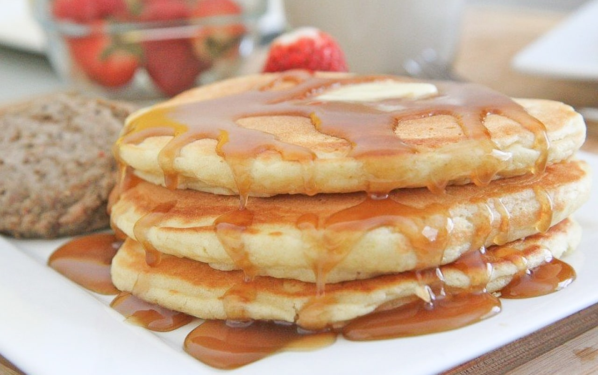

Buttermilk Pancakes

Ingredients
- 1 egg
- 1 1/4 cups buttermilk
- 1/2 teaspoon baking soda
- 1 1/4 cups sifted flour
- 1 teaspoon sugar
- 2 tablespoons butter
- 1 teaspoon baking powder
- 1/2 teaspoon salt
Instructions
- Preheat griddle to medium-high heat. In a bowl, beat the egg well. Beat in buttermilk and baking soda.
- Add flour, sugar, butter, baking powder, and salt. Mix just until all ingredients are incorporated. The batter should be thick with lumps.
- Pour batter from spoon or pitcher into pools on the griddle. Flip pancakes as soon as they are puffed and full of bubbles, but before they break. Cook until brown on both sides.